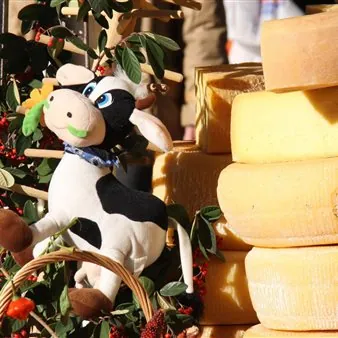

dom 8 nov
Treno storico del Formaggio 2026
Locomotiva diesel con carrozze anni '30 "Centoporte" e bagagliaio L’evento “Gemona, formaggio… e dintorni” si lega alla tradizione svolgendosi assieme alla Festa del Ringraziamento ed è nato per valorizzare la produzione casearia delle latterie locali e regionali. Oltre ai…
 Indicazioni
Indicazioni
- Costi e prenotazioni
- Costo non indicato · Prenotazione non indicata
- Programma
- Programma da verificare. Apri la fonte ufficiale per orari e possibili aggiornamenti.
- In caso di maltempo
- Nessuna indicazione specifica pubblicata.
- Note
- Acquisito automaticamente dalla fonte.
L’EVENTO
Descrizione completa
Locomotiva diesel con carrozze anni '30 "Centoporte" e bagagliaio L’evento “Gemona, formaggio… e dintorni” si lega alla tradizione svolgendosi assieme alla Festa del Ringraziamento ed è nato per valorizzare la produzione casearia delle latterie locali e regionali. Oltre ai numerosi eventi collaterali, intrattenimenti musicali, animazioni per i bambini, completano la gustosa offerta gli stand enogastronomici dove degustare squisite specialità tipiche soprattutto a base di formaggio.
Per informazioni sul treno storico:
TOLMEZZO INFOPOINT
Tel. +39 0433 44898
Cell. +39 335 7747958
info.tolmezzo@promoturismo.fvg.it
Per informazioni sulla località e sul programma della giornata:
Visit.Gemona
per tutte le domande più richieste clicca qui FAQ
Programma di dettaglio e attività :
Il treno del Formaggio porta i passeggeri da Sacile a Gemona del Friuli in occasione di “Gemona, formaggio… e dintorni” una grande mostra-mercato dei produttori lattiero caseari e delle tipicità enogastronomiche regionali e italiane con laboratori del gusto. L’evento si lega alla tradizione svolgendosi assieme alla Festa del Ringraziamento ed è nato per valorizzare la produzione casearia delle latterie locali e regionali. Oltre ai numerosi eventi collaterali, intrattenimenti musicali, animazioni per i bambini, completano la gustosa offerta gli stand enogastronomici dove degustare squisite specialità tipiche soprattutto a base di formaggio
Si avvisa che il treno storico ripartirà dalla stazione di Gemona del Friuli è alle 16.55
Dettagli sulle attività : per le varie possibilità di intrattenimento consultare il programma della manifestazione
INFORMAZIONI DI SERVIZIO AI PASSEGGERI:
All'arrivo alla Stazione di Gemona del F. i passeggeri potranno agevolmente raggiungere la festa con il servizio di navetta: Alle ore 10.45 dal piazzale antistante la Stazione FS a Porta Udine (nei pressi del Duomo) alle ore 16.00 da porta Udine al Piazzale antistante la Stazione FS Per chi volesse raggiungere la manifestazione a piedi, si avvisa che vi sono circa 1.100 metri prevalentemente in salita, che negli ultimi 200 mt. diventa abbastanza impegnativa. In questo caso si arriva nella zona di piazza del Ferro e di piazza Municipio dall'altra parte del Centro Storico rispetto al Duomo. Il tempo di percorrenza di discesa a piedi, dal centro storico alla stazione è di circa 20 minuti.
Si ricorda che il treno storico ripartirà dalla stazione di Gemona alle ore 16:55 quindi si raccomandano i passeggeri di calcolare al meglio i tempi ed usufruire delle due soluzioni (in bus navetta o a piedi) per il rientro in stazione.
Orari del treno
Andata: SACILE 07:40 Aviano 07:58 Maniago 08:34 GEMONA DEL FR. 10:45
Ritorno GEMONA DEL FR. 16:55 Maniago 19:17 Aviano 19:41 SACILE 20:17
Tariffe:
Andata e ritorno in treno storico
Adulti 10€;
Ragazzi (dai 4 ai 12 anni non compiuti) 5€;
Bambini (dai 0 ai 4 anni non compiuti) gratis senza riservazione del posto a sedere
Biglietti in vendita attraverso tutti i canali Trenitalia: www.trenitalia.com • biglietterie e self-service di stazione • agenzie di viaggio abilitate.
BIGLIETTI IN VENDITA
IL PROGRAMMA
Programma e orari
Appuntamenti raccolti dalle fonti elencate. Dove manca un orario, non è ancora disponibile in questa scheda.
Programma pubblicato
- Dal 2026-11-08 al 2026-11-08
INFORMAZIONI UTILI
Prima di partire
- Controllare la fonte prima di partire.
ORGANIZZAZIONE